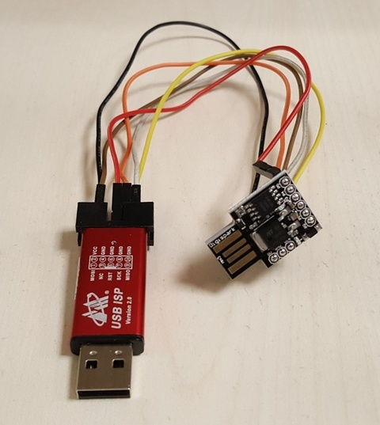
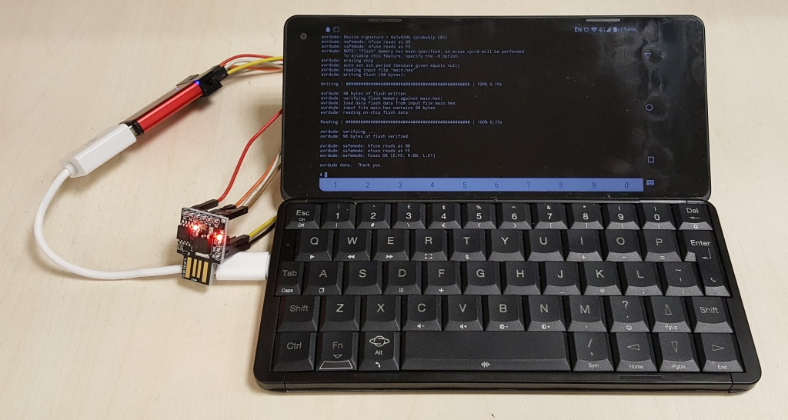

Steward
分享是一種喜悅、更是一種幸福
手機 - Gemini PDA 4G - Android - Termux - 使用avrdude燒錄ATtiny85
main.c
#include <avr/io.h>
#include <util/delay.h>
int main(void)
{
DDRB = 0x02;
while (1) {
PORTB = 0x02;
_delay_ms(500);
PORTB = 0x00;
_delay_ms(500);
}
return 0;
}
Makefile
unexport LD_PRELOAD export LD_LIBRARY_PATH:=$(LD_LIBRARY_PATH):/data/data/com.termux/files/usr/libexec/gcc/avr/4.8/ all: avr-gcc -Wall -Os -DF_CPU=1000000 -mmcu=attiny85 -o main.o main.c avr-objcopy -j .text -j .data -O ihex main.o main.hex flash: avrdude -vv -c usbasp -p t85 -U flash:w:main.hex:i clean: rm -rf main.o main.hex
編譯
$ make
avr-gcc -Wall -Os -DF_CPU=1000000 -mmcu=attiny85 -o main.o main.c
WARNING: linker: /data/data/com.termux/files/usr/libexec/gcc/avr/4.8/libmpc.so.3: unused DT entry: type 0xf arg 0xbde
WARNING: linker: /data/data/com.termux/files/usr/libexec/gcc/avr/4.8/libmpfr.so.4: unused DT entry: type 0xf arg 0x239e
WARNING: linker: /data/data/com.termux/files/usr/libexec/gcc/avr/4.8/libmpfr.so.4: unused DT entry: type 0xf arg 0x239e
avr-objcopy -j .text -j .data -O ihex main.o main.hex
接腳：
| USB ISP | Attiny85 |
|---|---|
| VCC | 5V |
| GND | GND |
| RST | PB5 |
| SCK | PB2 |
| MISO | PB1 |
| MOSI | PB0 |

燒錄
$ tsudo make flash
avrdude -vv -c usbasp -p t85 -U flash:w:main.hex:i
avrdude: Version 6.3, compiled on Nov 10 2018 at 22:02:45
Copyright (c) 2000-2005 Brian Dean, http://www.bdmicro.com/
Copyright (c) 2007-2014 Joerg Wunsch
System wide configuration file is "/data/data/com.termux/files/usr/etc/avrdude.conf"
User configuration file is "/data/data/com.termux/files/home/.avrduderc"
User configuration file does not exist or is not a regular file, skipping
Using Port : usb
Using Programmer : usbasp
avrdude: seen device from vendor ->www.fischl.de<-
avrdude: seen product ->USBasp<-
AVR Part : ATtiny85
Chip Erase delay : 4500 us
PAGEL : P00
BS2 : P00
RESET disposition : possible i/o
RETRY pulse : SCK
serial program mode : yes
parallel program mode : yes
Timeout : 200
StabDelay : 100
CmdexeDelay : 25
SyncLoops : 32
ByteDelay : 0
PollIndex : 3
PollValue : 0x53
Memory Detail :
Block Poll Page Polled
Memory Type Mode Delay Size Indx Paged Size Size #Pages MinW MaxW ReadBack
----------- ---- ----- ----- ---- ------ ------ ---- ------ ----- ----- ---------
eeprom 65 6 4 0 no 512 4 0 4000 4500 0xff 0xff
flash 65 6 32 0 yes 8192 64 128 4500 4500 0xff 0xff
signature 0 0 0 0 no 3 0 0 0 0 0x00 0x00
lock 0 0 0 0 no 1 0 0 9000 9000 0x00 0x00
lfuse 0 0 0 0 no 1 0 0 9000 9000 0x00 0x00
hfuse 0 0 0 0 no 1 0 0 9000 9000 0x00 0x00
efuse 0 0 0 0 no 1 0 0 9000 9000 0x00 0x00
calibration 0 0 0 0 no 1 0 0 0 0 0x00 0x00
Programmer Type : usbasp
Description : USBasp, http://www.fischl.de/usbasp/
avrdude: auto set sck period (because given equals null)
avrdude: AVR device initialized and ready to accept instructions
Reading | | 0% 0.00s
Reading | ################# | 33% 0.00s
Reading | ################################# | 66% 0.01s
Reading | ################################################## | 100% 0.01s
avrdude: Device signature = 0x1e930b (probably t85)
avrdude: safemode: hfuse reads as DD
avrdude: safemode: efuse reads as FE
avrdude: NOTE: "flash" memory has been specified, an erase cycle will be performed
To disable this feature, specify the -D option.
avrdude: erasing chip
avrdude: auto set sck period (because given equals null)
avrdude: reading input file "main.hex"
avrdude: writing flash (98 bytes):
Writing | | 0% 0.00s
Writing | ######################### | 50% 0.10s
Writing | ################################################## | 100% 0.19s
avrdude: 98 bytes of flash written
avrdude: verifying flash memory against main.hex:
avrdude: load data flash data from input file main.hex:
avrdude: input file main.hex contains 98 bytes
avrdude: reading on-chip flash data:
Reading | | 0% 0.00s
Reading | ######################### | 50% 0.07s
Reading | ################################################## | 100% 0.15s
avrdude: verifying ...
avrdude: 98 bytes of flash verified
avrdude: safemode: hfuse reads as DD
avrdude: safemode: efuse reads as FE
avrdude: safemode: Fuses OK (E:FE, H:DD, L:E1)
avrdude done. Thank you.
完成
